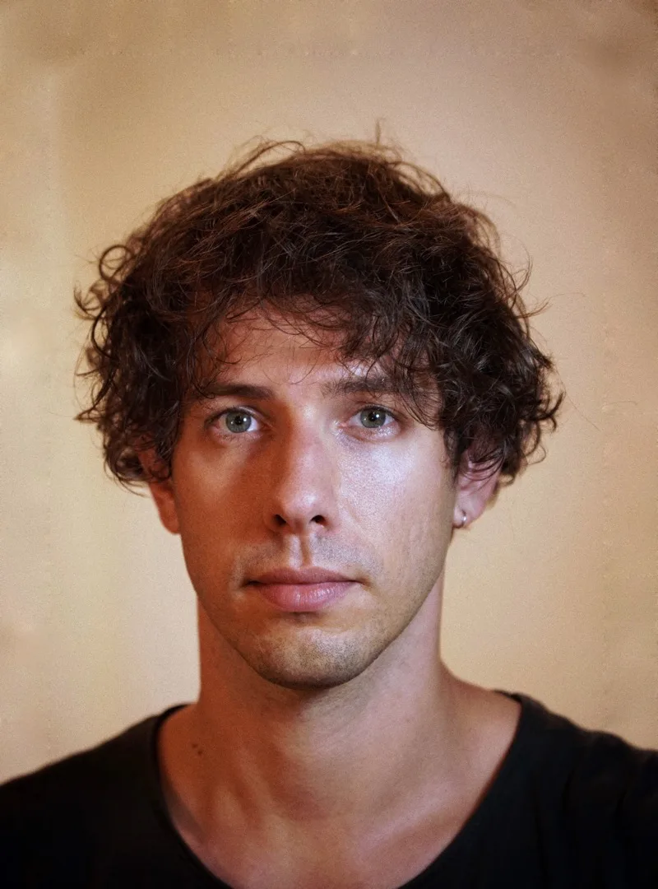
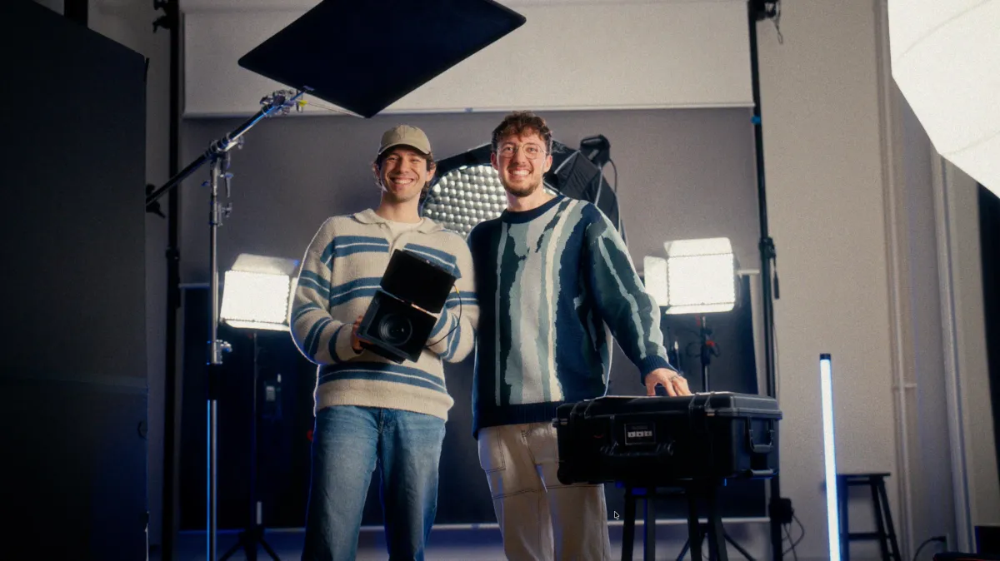
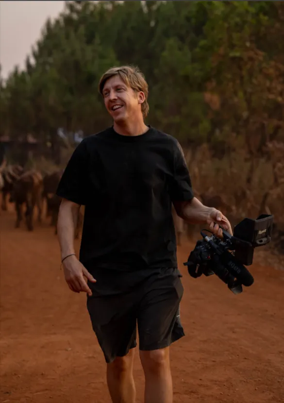
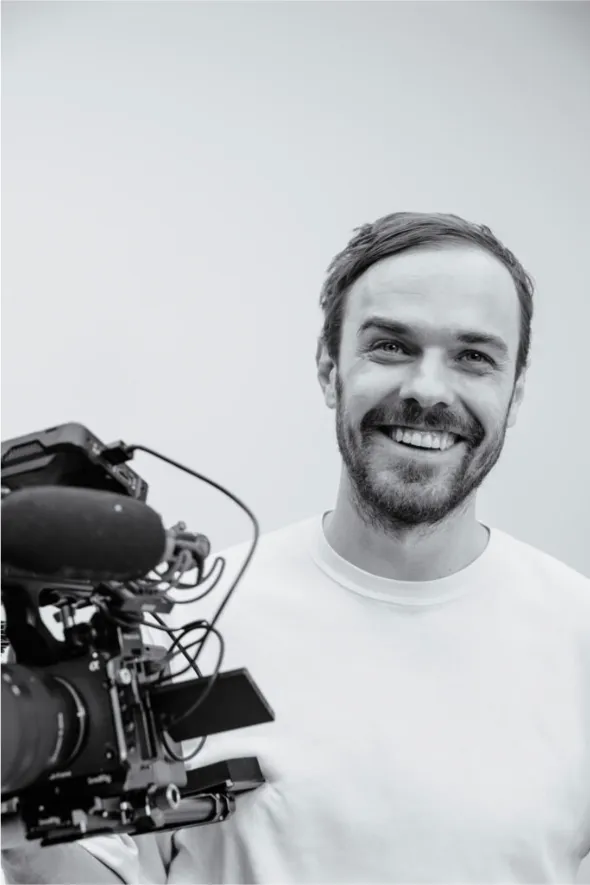

Video Photo Editing
01 — Work
Selected works
I work on many different kinds of projects. Choose a category below to see the work that fits what you're looking for.
Choose a category
Open any frame to see it larger
Have a project in mind? Let's talk
02 — Services
What I do
-
01
Video production
Corporate films, events and brand content, from the shoot to the final cut.
-
02
Video consulting & strategy
Defining what to film, for whom, and where the video will live.
-
03
Social media content
Reels and short formats designed for each platform.
-
04
Photography
Stills from the set, events and portraits.
-
05
Editing
Editing, color grading and sound design.
-
06
Motion graphics
Titles, animated UI, VFX and graphics that support the story.
03 — Process
How I work
-
01
Brief & concept
Every project starts with understanding what you need to say, and to whom.
- Call to define goals, audience and deliverables
- Clear concept, timeline and quote
- Formats planned upfront: 16:9, 9:16, cut-downs
-
02
Shoot
On set, I work solo or with a trusted crew, depending on the scope.
- Corporate interviews, events and conferences
- Lean, discreet setup that doesn't disrupt your day
- Cinematic image and clean sound
-
03
Edit & motion
This is where the story takes shape.
- Editing, color grading and sound design
- Motion graphics, titles and animated UI
- Review rounds with clear, timestamped feedback
-
04
Delivery
Ready to publish, wherever your audience is.
- Versions for web, social and screens at events
- Subtitles and multiple languages on request
- Fast turnaround for events and same-day content
04 — About
About

Hi, I'm Matteo, a video editor and filmmaker based in Zurich.
My path to this career was a journey of discovery. During my university studies I travelled and worked across Australia, Spain and Southeast Asia, exploring very different roles until I found my calling behind the camera and in the edit.
I turned my passion for shooting and editing into a career as a freelancer, and soon became the full-time video editor and motion graphic designer of a YouTube channel with over 2.6 million subscribers.
Today my work spans commercial films, documentaries and social content. I have contributed to projects for brands such as Swisscom, Raiffeisen and BYD, and I regularly team up with agencies and production companies like Kordial and Stories AG.
If you are a brand or an agency looking for a reliable editor and filmmaker, I would love to hear about your project.
Collaboration
As a freelancer, many projects are built on collaboration. When a scope requires more expertise, I bring in a trusted team.
-

01 / 03
Kordial
Creative Agency
The creative agency where I currently work part-time. Together we create aftermovies and video content for tech companies and educational institutions, from the first idea to the final cut.
-

02 / 03
Franz
Documentary filmmaker & storyteller
A documentary filmmaker and storyteller. Franz brings a cinematic eye to real-life stories, capturing people and places with honesty and depth.
-

03 / 03
Girts
Filmmaker & visual creator
A filmmaker and visual creator focused on start-ups and modern tech brands. Girts captures the pace and energy of young companies building something new.
Clients & partners I've worked with



05 — Contact
Let's work together
Tell me about your project.
Thanks!
Your brief has been sent. I'll reply to .
Or write directly to
fainmatteo.video@gmail.com